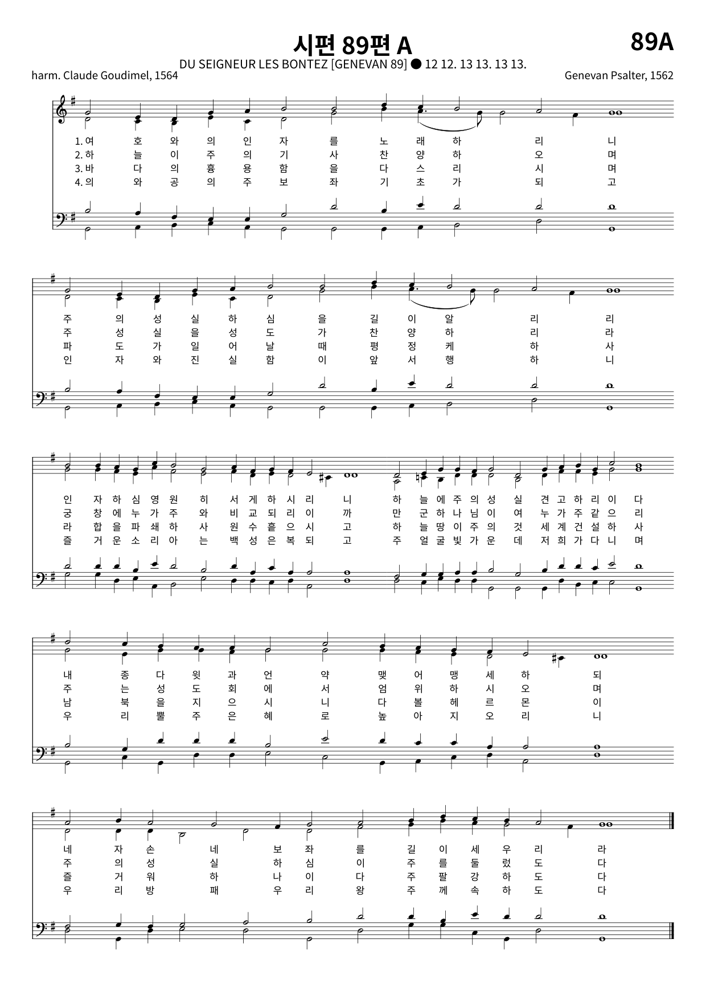

Psalm 89A
DU SEIGNEUR LES BONTEZ [GENEVAN 89] · 12 12. 13 13. 13 13.
English title: I Will Extol Thee, LORD
Tune: Genevan Psalter, 1562 · Harmony: Claude Goudimel, 1564 · Lyrics: Korean adaptation of Psalm 89 from the Korean Revised Version (AI draft adaptation · not yet theologically reviewed) · 4 stanzas
Psalm 89 is divided into 2 tunes: A B · This tune contains stanzas 1–4 of the Psalm 89 lyrics.
Score PDF MusicXML (for printing) MusicXML (for accompaniment, with prelude and repeats) Read Psalm 89 (Korean Revised Version)
Score
← Psalm 88 ListAccompaniment (in preparation)Psalm 89B →
Lyrics (Korean)
Stanza 1 (Ps. 1-4)
여호와의 인자를 노래하리니
주의 성실하심을 길이 알리리
인자하심 영원히 서게 하시리니
하늘에 주의 성실 견고하리이다
내 종 다윗과 언약 맺어 맹세하되
네 자손 네 보좌를 길이 세우리라
여호와의 인자를 노래하리니
주의 성실하심을 길이 알리리
인자하심 영원히 서게 하시리니
하늘에 주의 성실 견고하리이다
내 종 다윗과 언약 맺어 맹세하되
네 자손 네 보좌를 길이 세우리라
Stanza 2 (Ps. 5-8)
하늘이 주의 기사 찬양하오며
주 성실을 성도가 찬양하리라
궁창에 누가 주와 비교되리이까
만군 하나님이여 누가 주 같으리
주는 성도 회에서 엄위하시오며
주의 성실하심이 주를 둘렀도다
하늘이 주의 기사 찬양하오며
주 성실을 성도가 찬양하리라
궁창에 누가 주와 비교되리이까
만군 하나님이여 누가 주 같으리
주는 성도 회에서 엄위하시오며
주의 성실하심이 주를 둘렀도다
Stanza 3 (Ps. 9-13)
바다의 흉용함을 다스리시며
파도가 일어날 때 평정케 하사
라합을 파쇄하사 원수 흩으시고
하늘 땅이 주의 것 세계 건설하사
남북을 지으시니 다볼 헤르몬이
즐거워하나이다 주 팔 강하도다
바다의 흉용함을 다스리시며
파도가 일어날 때 평정케 하사
라합을 파쇄하사 원수 흩으시고
하늘 땅이 주의 것 세계 건설하사
남북을 지으시니 다볼 헤르몬이
즐거워하나이다 주 팔 강하도다
Stanza 4 (Ps. 14-18)
의와 공의 주 보좌 기초가 되고
인자와 진실함이 앞서 행하니
즐거운 소리 아는 백성은 복되고
주 얼굴 빛 가운데 저희가 다니며
우리 뿔 주 은혜로 높아지오리니
우리 방패 우리 왕 주께 속하도다
의와 공의 주 보좌 기초가 되고
인자와 진실함이 앞서 행하니
즐거운 소리 아는 백성은 복되고
주 얼굴 빛 가운데 저희가 다니며
우리 뿔 주 은혜로 높아지오리니
우리 방패 우리 왕 주께 속하도다